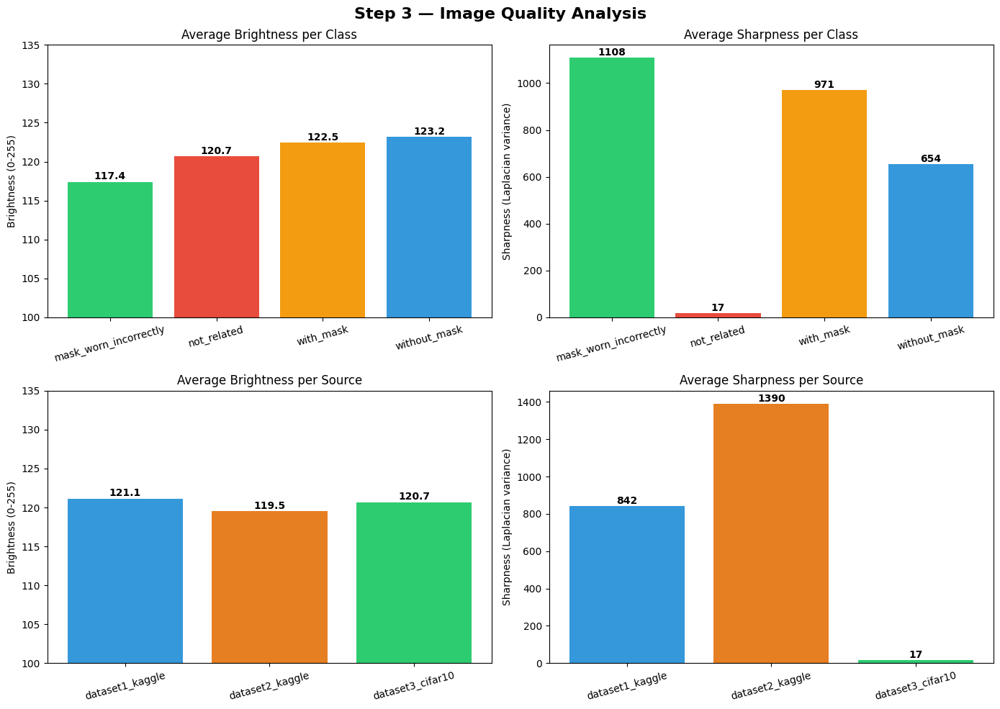
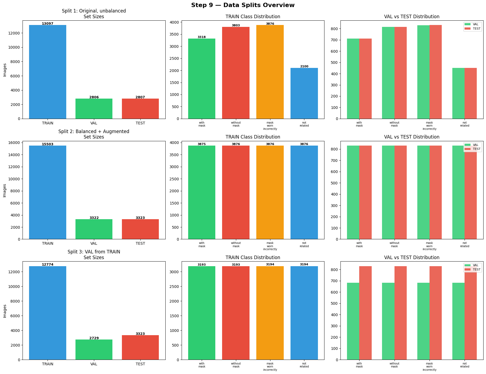
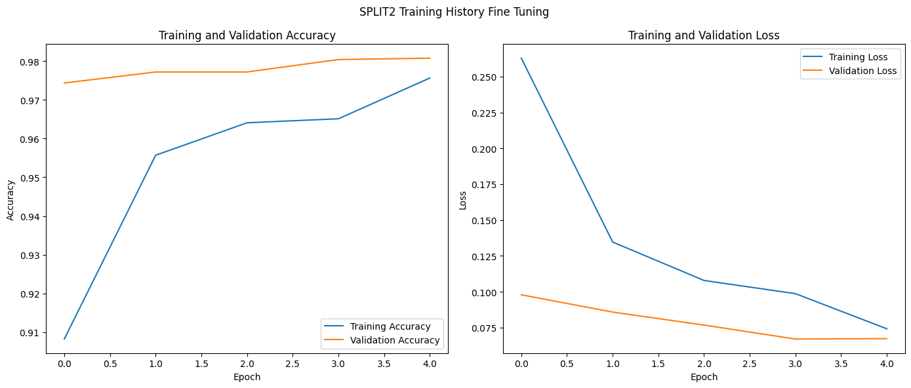
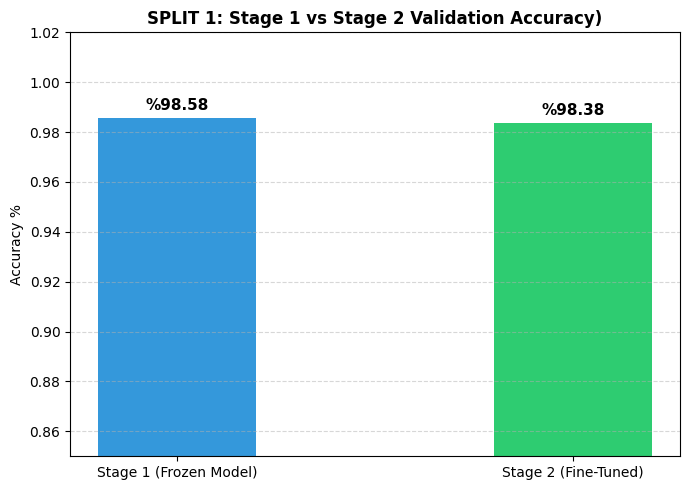
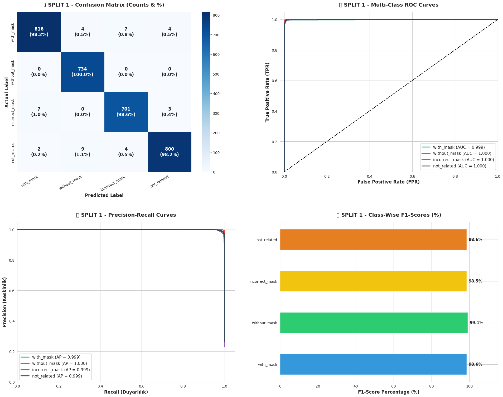

A deep transfer learning pipeline on MobileNetV2 engineered to eliminate production false alarms, audit training convergence curves, and achieve 99.55% multi-class test accuracy with edge inference latency.
Why standard Mask vs No-Mask models fail in production, and how our 4-class taxonomy solves it.
Scaling from 23,291 raw heterogeneous images to 20,603 certified, non-leaking training samples.

Rigorous partition strategy comparing imbalanced baseline, class balancing, and carved validation.

Evaluating inverted residual bottlenecks against heavy CNN and Vision Transformer alternatives.
Comparing real-time loss/accuracy trajectories, validation stability, and overfit prevention from training logs.


Safeguarding pre-trained low-level filters while specializing high-level representations.
MobileNetV2 base layers 0-125 are locked. Only custom top dense weights are updated. Prevents gradient destruction of pre-trained ImageNet filters during initial randomized iterations.
Unfroze the final 30 convolutional layers of MobileNetV2 with a 10x smaller learning rate ($10^-5$) to adapt high-level semantic masks and strap geometry without catastrophic forgetting.
Rigorous multi-class evaluation extracted directly from academic report visualizations.

not_related is 1.000 with 100.0% precision, ensuring random objects never trigger false positives.mask_worn_incorrectly, detecting subtle nose-exposure flaws.Empirical metrics across all 4 classes on unobserved, isolated test sets.
Defending core engineering choices against common design alternatives.
Quantization, RTSP video pipeline integration, and complete project repository resources.